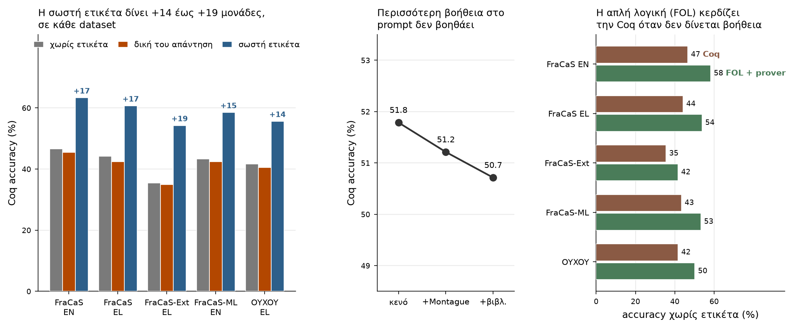

Πού βρισκόμαστε και τι χρειάζεται να γίνει.
Να ολοκληρωθεί η αξιολόγηση των εξηγήσεων.
Όλα τα υπολογιστικά μέρη του project έχουν τελειώσει. Το μόνο που λείπει είναι η δική σας αξιολόγηση. Κάθε άτομο παίρνει 40 items — περίπου δύο ώρες δουλειάς.
Τρία ευρήματα, από 95.917 items Coq και 77.112 items FOL, σε 9 μοντέλα και 5 datasets.

Όταν δίνουμε στο μοντέλο τη σωστή ετικέτα και του ζητάμε μόνο την απόδειξη, κερδίζει +14 έως +19 μονάδες — και στα πέντε datasets. Το περίεργο είναι το άλλο άκρο: όταν του δείχνουμε τη δική του προηγούμενη απάντηση, τα πάει χειρότερα απ' ό,τι αν δεν του δώσουμε τίποτα. Και αυτό σε κάθε dataset, χωρίς εξαίρεση.
Δοκιμάσαμε τρία επίπεδα: σκέτο prompt, prompt με θεμελίωση Montague, και prompt με βιβλιοθήκες ανά φαινόμενο. Το αποτέλεσμα πέφτει ελαφρά κάθε φορά — 51,8% → 51,2% → 50,7% — ενώ οι προσπάθειες ανά item αυξάνονται. Δηλαδή το πρόβλημα δεν είναι ότι λείπει το θεωρητικό υπόβαθρο.
Χωρίς καμία βοήθεια, η FOL με automated prover βγάζει 58% στο FraCaS ενώ η Coq 47%. Το ίδιο και στα υπόλοιπα datasets. Η Coq προλαβαίνει μόνο όταν της δοθεί η σωστή ετικέτα.
Ο LLM judge συμφωνεί με τους ανθρώπους σχεδόν απόλυτα στο αν μια εξήγηση είναι συνεπής, αρκετά καλά στο αν στέκει ο συλλογισμός — αλλά στο αν εντόπισε το σωστό γλωσσολογικό φαινόμενο δεν τα καταφέρνει καθόλου. Αυτό είναι από τα πιο ενδιαφέροντα ευρήματα και στηρίζεται ακόμα σε λίγα items. Γι' αυτό μετράει η αξιολόγησή σας.
| Στάδιο | κατάσταση |
|---|---|
| Phase 1 — προβλέψεις μοντέλων (103.428 items, 9 μοντέλα, 5 datasets) | έτοιμο |
| Βαθμολόγηση από LLM judge (27.947 εξηγήσεις) | έτοιμο |
| Phase 2 — Coq (95.917 items) | έτοιμο |
| Phase 2 — FOL (77.112 items) | έτοιμο |
| Αξιολόγηση εξηγήσεων από εσάς | σε εξέλιξη |
phase1_nli_eval/judge_scores/ (όχι μέσα στο
results/), για την ώρα μόνο zero-shot / αγγλικά ώστε να είναι
διαχειρίσιμο.reviews/<dataset>__<model>__<technique>__<lang>.<όνομα>.reviews.json.feature/review-app-sampling — δουλεύει, αλλά δεν έχει γίνει ακόμα merge.
Ο Κωνσταντίνος είναι διαθέσιμος για συζήτηση τις επόμενες μέρες.Γράψτε στο group — μην περιμένετε. Καλύτερα να λυθεί σε δέκα λεπτά παρά να μείνει μια εβδομάδα.